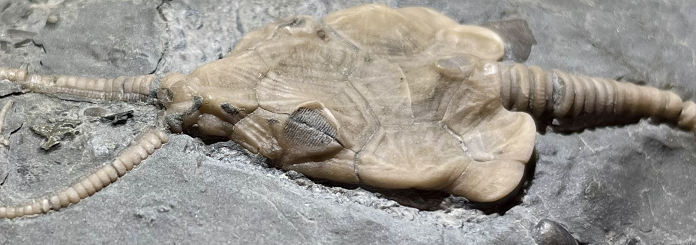
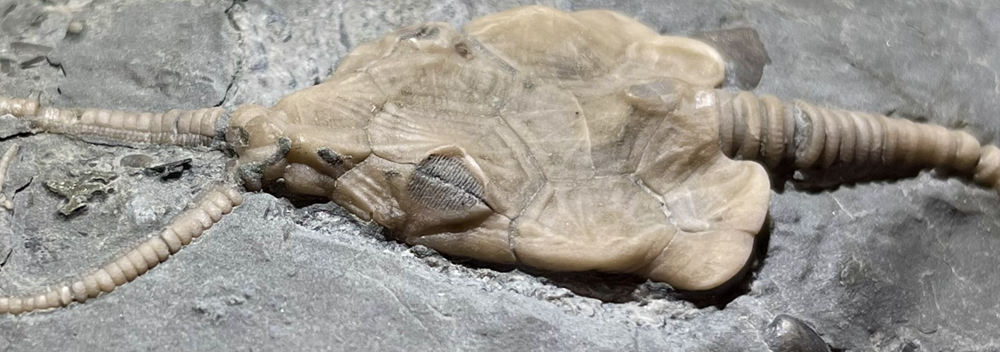

Cystoid
Pleurocystites aff. P. squamosus
• Ordovician
• Bobcaygeon Formation
• James Dick Quarry, Ontario, Canada
Size: 2.5 cm theca
This specimen resembles Pleurocystites squamosus, a very common cystoid from the Bobcaygeon Formation, except with a few atypicalities that may or may not be within the range of intraspecific variation. Foremost, the rhomb in the L3-L4 ("top-left") position is more elongated along the line of the suture, rather than being more elongated across the suture as typically seen in P. squamosus; in other words it is longer than wide along the suture. Second, it bears very prominent dorsal plate ornamentation (a.k.a. prosopon), though the genus Pleurocystites is known to have a highly variable prosopon with consequently limited taxonomic value (Parsley 1970). Third, the plates are relatively inflated and their sutures impressed, giving the theca an irregular and angular outline, as opposed to the typical smooth, oval/egg-shaped outline.
In these regards this specimen bears some similarities to P. filitextus, but that species too can look similar to some variants of P. squamosus, with the exception of the ventral side having 50-60 large irregularly polygonal plates as opposed to 100+ small plates in P. squamosus (Parsley 1970). Without the most conclusive features of the ventral side visible, I have opted to leave this as Pleurocystites aff. P. squamosus for now, though as I said it could be simply a variant of P. squamosus.


 
